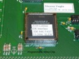
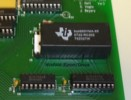

|
Z-100 IDE Controller Features and NVsRAM Programming
|

|
The IDE controller has several important features: -- The board has two IDE 40-pin connectors capable of using several common IDE devices. -- The board has a bootable and programmable NVsRAM (often referred to as the Eprom chip to stay standard with the terminology used on the Z-100 LLSCSI Controller Board and software). -- The board has a hardware Breakout switch located at the upper right corner of the IDE controller card. The breakout switch is helpful for troubleshooting software and provided access to the Z-100 ROM monitor diagnostics and capabilities. -- The board has a header just to the left of the left IDE connector that has a LED indicator plug attached (not shown in the picture). This plug has a green LED and five red LED's to act as an NVsRAM and IDE device status indicator. The right-most two pins are available for a remote Breakout Switch (not included). Many of these functions will be addressed further below.
|
 |
 | <-- The Altera Chip --> The IDE Controller's Heart |
|
The programmable Altera chip, EPM7064SLC84, controls several IDE Controller Card's functions:
-- Read/Write functions to the NVsRAM A programming header is provided just below the LED header. It requires reconfiguration of the pins and some jumpers when not being used. The programming of the Altera chip is beyond the purpose of this article. I recommend that you try the Altera website, www.altera.com, for further information.
| ||
|
|
<-- Breakout Switch --> | |
|
The Breakout switch is located just to the lower right of the right IDE connector on the top of the board. Pressing it energizes the circuitry just below the Altera chip on the left side to stop the present DOS activity at the DOS prompt and return the computer to the hand prompt. From there, the operator may use any of the monitor commands to test the computer, access certain points in memory, or perform other simple functions. To return to the program press {G}o and {RETURN} twice. The operator is returned to the DOS prompt to continue DOS operations.
| ||
|
|
 | <-- NVsRAM (Eprom) --> With Real Time Clock, Z-100 Boot Code and other Programs |
|
The NVsRAM (Eprom) provides the boot code necessary for the Z-100 to operate. It has 512K sRAM for loading the boot code, other programs, and also contains a real time clock in the last sector. It is programmable on the card using local software. The remainder of this document will address this capability.
| ||
|
Reprogramming the NVsRAM (Eprom):
Every system has been shipped with a preprogrammed NVsRAM for the type of system expected, that is, with or without an MFM hard drive system installed. The NVsRAM is bootable and is designed to be the primary boot device. However, should you desire to change the NVsRAM's programming or if the NVsRAM should lose it's programming for some reason, it can be easily reprogrammed.
The NVsRAM chosen for distribution was the Texas Instruments BQ4850YMA, a 512Kb NVsRAM (non-volatile static RAM) model with real time clock. The Dallas DS1647Y model has similar capabilities and is a direct replacement, if necessary. While these models use only 32 pins, the 36-pin socket was installed to allow using the larger 1024Kb models from both companies. However, if these models include real time clocks, additional hardware and software is required to process this capability. Some clock models include alarms and wakeup capability!
CAUTION: When installing the 32-pin NVsRAMs, ALWAYS leave the four empty pins of the socket to the LEFT! A jumper, located just above the NVsRAM socket, is also required to be modified and jumpered to accommodate the 36-pin units.
Note: Another 2-pin jumper is located just above the NVsRAM that can be cut to ensure write protection to the NVsRAM. When the trace between the pins is cut on the back of the board and a jumper is NOT installed, the NVsRAM will be WRITE-PROTECTED.
The easiest means of reprogramming the NVsRAM is to reload the original programming, using the utility EPWRFILE and a disk image file, EPTEST.DAT. For those individuals who ordered IDE devices with their IDE controller boards, the EPTEST.DAT file was already created by me and saved in two directories on the IDE device: \EPROMPGM (Eprom Programming) and \ORGEPROM (Original Eprom). For those installing their own IDE devices, I recommended in the installation procedures that you do the same using the procedures provided in the next section.
Drive LED Indicator: Located to the left of the IDE connectors is a row of Light Emitting Diodes (LEDs) on the top edge of the board. From left to right, these indicate:
-- NVsRAM Read Operation. This green LED lights whenever the NVsRAM is being Read.
This indicator is a plugin device that may be replaced with leads to a front plate indicator, if desired. The two right-most pins are left unused and may be connected to a remote Breakout Switch, if desired.
Creating an NVsRAM (Eprom) Image File - EPTEST.DAT
1. Create two subdirectories on your IDE or MFM drives: \ORGEPROM and \EPROMPGM.
2. Copy all the NVsRAM files to BOTH of these directories.
3. Finally, change the default drive to one of these partitions and run the EPRDFILE utility.
4. Copy the EPTEST.DAT file to the other subdirectory as a backup.
NOTE: The EPWRFILE uses the image file created by EPRDFILE to reprogram the NVsRAM on the IDE Controller Board. However, it presently appears that we cannot run EPWRFILE with the data file, EPTEST.DAT, located on an IDE device. If the data file is stored on an IDE device, EPWRFILE will appear to work properly, with the IDE LED flashing and it will report that the file was successfully written to the EPROM (NVsRAM), however, if you look carefully you will see that the red NVsRAM LED is NOT flashing, and the file was NOT written to the NVsRAM. Be sure to copy all the programming files, including the EPTEST.DAT file, to an MFM hard drive or create a 3.5" floppy disk and store them there.
Reprogramming the NVsRAM (Eprom) from the EPTEST.DAT file:
1. If able, boot to the NVsRAM (Eprom) as usual and change the default drive to the MFM hard drive
Reprogramming the NVsRAM (Eprom) using the Programming Configuration Procedures:
1. Boot to the MFM drives or the Z-DOS v4.06 floppy disk.
5. Note the new drive letter listed for programming the Eprom, as you will need this later.
Changing the programming of the NVsRAM (Eprom):
To change the programming of the NVsRAM on the fly, be sure to reboot in the programming mode, copy or delete any files to the NVsRAM as necessary, and finally run CHKSUMEP to create a new checksum on the NVsRAM. However, there is the possibility of really messing things up. I highly recommend just editing EPROMPGM.BAT with EDLIN or another line editor and simply following the above procedures. It does everything automatically.
Closing:
I hope you found this document useful. I have found this new booting capability to be extremely fast and reliable and hope you do also. If you have any questions or need help, don't hesitate to e-mail me at the link below.
|

z100lifeline@earthlink.net
|
HOME
|
History Page
|
Z-100 Page
|
Repair Page
|
|
Copyright © 2009, Steven W. Vagts Revised -- December 16, 2009 |

|